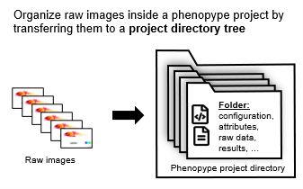
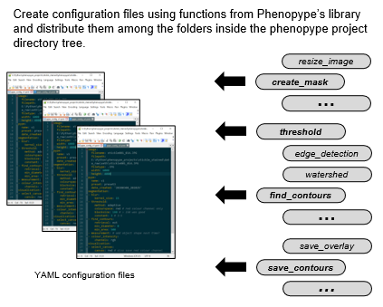
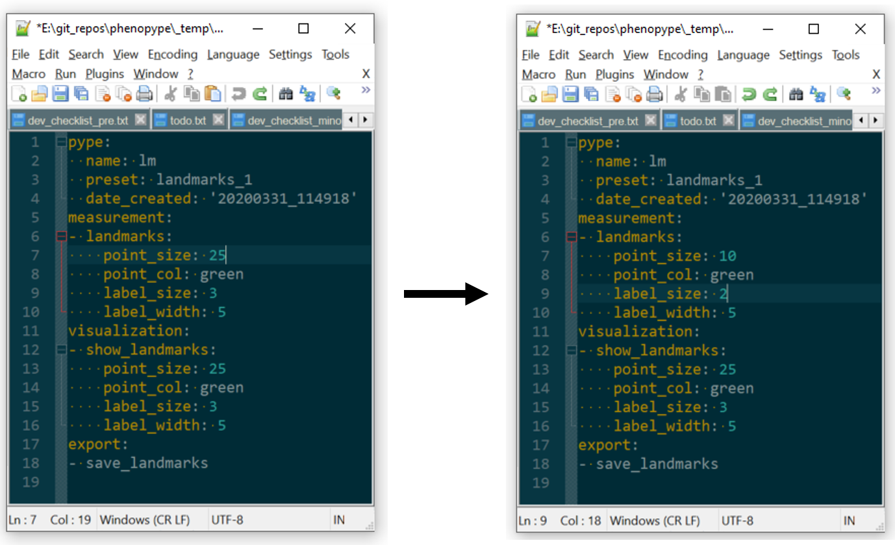
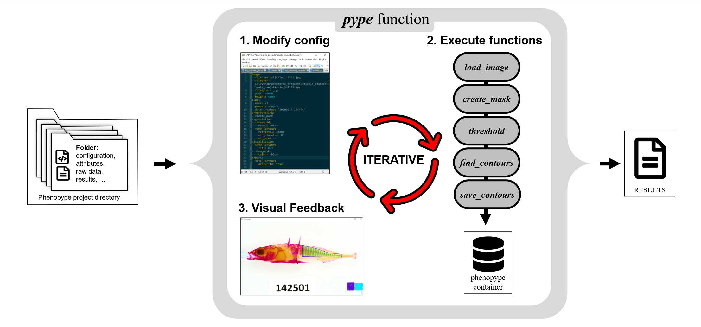
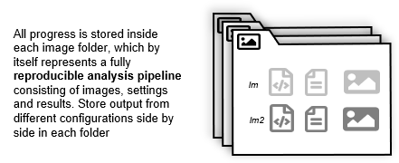

Tutorial 4: Setting up and managing projects¶
A central aspect of phenopype is the use of a project to efficiently process larger amounts of images. Creating a project object will set up a directory tree in which each folder contains the copy or a link to the original raw image files. Alongside the images to be processed, users can store configuration file for the pype routine that were covered in Tutorial 3. Configurations files can be created using preconfigured templates, which can
be easily modified. Once raw images have been added and configuration files are in place, the pype function can be used within a simple for loop. After all images are processed, the results are stored alongside the raw images and the pype-configuration files.
Anyone with access to the raw images and the configuration files is able to reproduce the results with a few lines of code, making phenopype project directories the perfect format for code sharing and data sharing after publication through online repositories (such as Dryad, Zenodo or OSF).
Creating a project directory structure and adding images¶
A Phenopype project directory can be initialized with the project function. The phenoype project root folder should be separate from the raw data, e.g. as a folder inside of your main project folder (see API reference).

Step. 1: Create a phenopype project and organize raw images into separate folders where all relevant data, attributes and results are stored.
[1]:
import phenopype as pp
import os
myproj = pp.project(root_dir=r"_temp/my_project") ## doesn't have to be "myproj", can be named anything
--------------------------------------------
Phenopype will create a new project at
E:\git_repos\phenopype\tutorials\_temp\my_project
Proceed? (y/n)
y
project attributes written to E:\git_repos\phenopype\tutorials\_temp\my_project\attributes.yaml
--------------------------------------------
Next step is to add images to the project. You can do so with the add_files method of the created project (a method is an executable function that belongs to an existing object, in this case “myproj). The function offers some flexibility in terms of which files to import. Most important arguments here are include, exclude and filetypes. For example, given the following list of images:
[2]:
images = "images"
os.listdir("images") ##
[2]:
['cichlid1.jpg',
'cichlid2.jpg',
'cichlid3.jpg',
'cichlid_multi1.jpg',
'cichlid_multi2.jpg',
'cichlid_multi3.jpg',
'isopods.jpg',
'isopods_fish.mp4',
'phyto_445.jpg',
'phyto_469.jpg',
'phyto_586.jpg',
'phyto_bright.jpg',
'snails1.jpg',
'snails2.jpg',
'stickle1.JPG',
'stickle2.JPG',
'stickle3.JPG',
'stickleback_side.jpg',
'stickleback_top.jpg',
'worms.jpg']
If we want to import “stickle1”, “stickle2”, and “stickle3”, we can do a combination include and exclude (also prints all other default settings):
[3]:
myproj.add_files(image_dir=images,
include="stickle", ## can be type "str" or type "list"
exclude=["side","top"] ## can be type "str" or type "list"
)
--------------------------------------------
phenopype will search for image files at
E:\git_repos\phenopype\tutorials\images
using the following settings:
filetypes: ['jpg', 'JPG', 'jpeg', 'JPEG', 'tif', 'png', 'bmp'], include: stickle, exclude: ['side', 'top'], mode: copy, recursive: False, resize: False, unique: path
Found image stickle1.JPG - phenopype-project folder 0__stickle1 created
Found image stickle2.JPG - phenopype-project folder 0__stickle2 created
Found image stickle3.JPG - phenopype-project folder 0__stickle3 created
Found 3 files
--------------------------------------------
The three images have the same (nonstandard) file ending, so we can also use the filetype argument (and the overwrite argument, because have already added them above):
[4]:
myproj.add_files(image_dir=images,
filetypes="JPG" , ## can be type "str" or type "list"
exclude=["side","top"], ## can be type "str" or type "list"
overwrite=True
)
--------------------------------------------
phenopype will search for image files at
E:\git_repos\phenopype\tutorials\images
using the following settings:
filetypes: JPG, include: [], exclude: ['side', 'top'], mode: copy, recursive: False, resize: False, unique: path
Found image stickle1.JPG - phenopype-project folder 0__stickle1 created (overwritten)
Found image stickle2.JPG - phenopype-project folder 0__stickle2 created (overwritten)
Found image stickle3.JPG - phenopype-project folder 0__stickle3 created (overwritten)
Found 3 files
--------------------------------------------
Thre are more settings to add_files: - mode determines whether raw files should be copied to each folder in the Phenopype directory tree (using copy [default]), or just their filepath (using link), which can be useful if data sets contain many or very large images. A third option is mod, which will open the iages and save them again in TIF format. This mode also allows to resize images. - recursive indicates whether only the top directory (False; default), or also all
subdirectories (True) should be included in the search. - unique indicates whether files should be unique by their path (filepath [default]) or only by their name (filename) - duplicate files will be skipped.
For more information on add_files, refer to the API, or use help:
[5]:
help(pp.project.add_files)
Help on function add_files in module phenopype.main:
add_files(self, image_dir, filetypes=['jpg', 'JPG', 'jpeg', 'JPEG', 'tif', 'png', 'bmp'], include=[], include_all=True, exclude=[], mode='copy', extension='tif', recursive=False, overwrite=False, resize_factor=1, unique='path', **kwargs)
Add files to your project from a directory, can look recursively.
Specify in- or exclude arguments, filetypes, duplicate-action and copy
or link raw files to save memory on the harddrive. For each found image,
a folder will be created in the "data" folder within the projects root
directory. If found images are in subfolders and "recursive==True",
the respective phenopype directories will be created with
flattened path as prefix.
E.g., with "raw_files" as folder with the original image files
and "phenopype_proj" as rootfolder:
- raw_files/file.jpg ==> phenopype_proj/data/file.jpg
- raw_files/subdir1/file.jpg ==> phenopype_proj/data/1__subdir1__file.jpg
- raw_files/subdir1/subdir2/file.jpg ==> phenopype_proj/data/2__subdir1__subdir2__file.jpg
Parameters
----------
image_dir: str
path to directory with images
filetypes: list or str, optional
single or multiple string patterns to target files with certain endings.
"default_filetypes" are configured in settings.py
include: list or str, optional
single or multiple string patterns to target certain files to include
include_all (optional): bool,
either all (True) or any (False) of the provided keywords have to match
exclude: list or str, optional
single or multiple string patterns to target certain files to exclude -
can overrule "include"
recursive: (optional): bool,
"False" searches only current directory for valid files; "True" walks
through all subdirectories
unique: {"filepath", "filename"}, str, optional:
how to deal with image duplicates - "filepath" is useful if identically
named files exist in different subfolders (folder structure will be
collapsed and goes into the filename), whereas filename will ignore
all similar named files after their first occurrence.
mode: {"copy", "mod", "link"} str, optional
how should the raw files be passed on to the phenopype directory tree:
"copy" will make a copy of the original file, "mod" will store a
.tif version of the orginal image that can be resized, and "link"
will only store the link to the original file location to attributes,
but not copy the actual file (useful for big files, but the orginal
location needs always to be available)
extension: {".tif", ".bmp", ".jpg", ".png"}, str, optional
file extension for "mod" mode
resize_factor: float, optional
kwargs:
developer options
Adding pype-configuration files¶
In the next step we prepare the files we added for use with the pype routine by addding a configuration file with the add_config method. Instead of adding the functions one by one we can load presets that are appropriate for the given computer vision analysis.
Currently, the different templates are stored inside a Python file, and can be inspected using pp.pype_config_templates to show all existing templates, and pp.show_config_template("landmarks1") to show the contents.

Step. 2: Create configuration files and store them alongside the raw images.
[6]:
pp.pype_config_templates
[6]:
{'demo.yaml': 'e:\\git_repos\\phenopype\\phenopype\\templates\\demo.yaml',
'ex1.yaml': 'e:\\git_repos\\phenopype\\phenopype\\templates\\ex1.yaml',
'ex2.yaml': 'e:\\git_repos\\phenopype\\phenopype\\templates\\ex2.yaml',
'ex3.yaml': 'e:\\git_repos\\phenopype\\phenopype\\templates\\ex3.yaml',
'ex5_1.yaml': 'e:\\git_repos\\phenopype\\phenopype\\templates\\ex5_1.yaml',
'ex5_2.yaml': 'e:\\git_repos\\phenopype\\phenopype\\templates\\ex5_2.yaml',
'ex6.yaml': 'e:\\git_repos\\phenopype\\phenopype\\templates\\ex6.yaml',
'ex7.yaml': 'e:\\git_repos\\phenopype\\phenopype\\templates\\ex7.yaml',
'ex8_1.yaml': 'e:\\git_repos\\phenopype\\phenopype\\templates\\ex8_1.yaml',
'ex8_2.yaml': 'e:\\git_repos\\phenopype\\phenopype\\templates\\ex8_2.yaml',
'landmarks1.yaml': 'e:\\git_repos\\phenopype\\phenopype\\templates\\landmarks1.yaml',
'landmarks2.yaml': 'e:\\git_repos\\phenopype\\phenopype\\templates\\landmarks2.yaml',
'tut3.yaml': 'e:\\git_repos\\phenopype\\phenopype\\templates\\tut3.yaml'}
[7]:
pp.show_config_template("landmarks1")
SHOWING BUILTIN PHENOPYPE TEMPLATE landmarks1.yaml
- measurement:
- landmarks:
point_size: 25
point_colour: green
label_size: 3
label_width: 5
- visualization:
- draw_landmarks:
point_size: 25
point_colour: green
label_size: 3
label_width: 5
- export:
- save_landmarks
For example, if we want to place landmarks, we can use one of the corresponding presets.
[8]:
myproj.add_config(name = "lm", template="landmarks1")
New pype configuration created (landmarks1.yaml) from phenopype template:
e:\git_repos\phenopype\phenopype\templates\landmarks1.yaml
pype_lm.yaml created for 0__stickle1
pype_lm.yaml created for 0__stickle2
pype_lm.yaml created for 0__stickle3
Now all images folders contain a configuration file in yaml format (see Tutorial 2 and the resources section of the Documentation for details).
An imporant feature of add_config is the opportunity to evulate and edit the template before it gets saved in the folders. This is done by setting the flag interactive=True in the arguments. For example, if we globally want to change point and label size of the landmark preset, we can do:

Edit the templates before saving them to the image folders.
NOTES
The
pypefunction opens a text editor and a python window. To modify thepypeconfiguration templates, by default, the first image in your project directory tree will copied over to the phenopype project root directory. After the windows have opened they can be controlled as described as in Tutorial 2.If you have issues with this step, e.g. no text editor window is popping up, make sure you have set the default app for opening yaml files. Furthermore, consult the Installation Instructions and check if your text editor is configured correctly.
[9]:
myproj.add_config(name = "lm",
template="landmarks1",
interactive=True,
overwrite=True ## needed because config with the name "lm" already exists in the folders
)
New pype configuration created (landmarks1.yaml) from phenopype template:
e:\git_repos\phenopype\phenopype\templates\landmarks1.yaml
Succesfully loaded existing pype config (pype_config_MOD_lm.yaml) from:
E:\git_repos\phenopype\tutorials\_temp\my_project\pype_config_MOD_lm.yaml
------------+++ new pype iteration 2021:03:12 16:46:01 +++--------------
MEASUREMENT
landmarks
- setting landmarks
VISUALIZATION
- modifed image
- autoselect canvas
draw_landmarks
------------+++ finished pype iteration +++--------------
-------(End with Ctrl+Enter or re-run with Enter)--------
TERMINATE
Entered interactive config mode using first image (first).
pype_lm.yaml created for 0__stickle1 (overwritten)
pype_lm.yaml created for 0__stickle2 (overwritten)
pype_lm.yaml created for 0__stickle3 (overwritten)
Saving and loading a project¶
Project objects can be saved using a the static method save (static = unbound to any object). This will save the project data to the project’s root directory. Currently, the only useful information stored in the project object is the list of all contained directories. Future releases will make more use of the project object.
IMPORTANT - read before continuing
pp.project.save saves ONLY the directory paths - all data collected with the pype method or any of the other workflows need to be saved inside the folders using the appropriate export functions.
[10]:
pp.project.save(myproj, overwrite=True)
Project data saved under E:\git_repos\phenopype\tutorials\_temp\my_project\project.data.
To load the project again, add provide the path of the project.data file in the root folder to the load method:
[11]:
import phenopype as pp
myproj = pp.project.load("_temp/my_project")
myproj.dirpaths
--------------------------------------------
Project loaded from
E:\git_repos\phenopype\tutorials\_temp\my_project
Project has 3 image folders
--------------------------------------------
[11]:
['E:\\git_repos\\phenopype\\tutorials\\_temp\\my_project\\data\\0__stickle1',
'E:\\git_repos\\phenopype\\tutorials\\_temp\\my_project\\data\\0__stickle2',
'E:\\git_repos\\phenopype\\tutorials\\_temp\\my_project\\data\\0__stickle3']
Using pype with project folders¶

Step. 3: Apply pype function image by image.
After adding images and configuration, all is set to process your dataset with high throughput. Using a simple for loop, we then go through all directories one by one. You can modify the configuration file and control the window as described as in Tutorial 2 (YAML-syntax). The skip argument will allow to skip files with a given config name you have already analyzed. This allows you to return to the point where you left off.
NOTES
Make sure to specifiy the name of the config file you added before, in this case, “lm”. The config file name serves multiple purposes: on the one hand it tells the
pypefunction which configuration to load, if you have multiple in one directory. On the other hand, the name gets appended to all results files that are produced by this constellation.Consult Tutorial 2 (pype-behavior) to understand
pypethe most important aspects of thepypefunction. For example, while working from apype, all collected data will be automatically saved, but only if it doesn’t exist yet - control this behavior withoverwrite: True/False.Immediately close the window and break the
forloop withEsc.
[12]:
for folder in myproj.dirpaths:
directory = os.path.join(myproj.root_dir, folder)
pp.pype(directory,
name="lm", ## loads the config file "pype_config_lm.yaml". "lm" gets appended to all results files
skip=False ## skip=True will skip over any directories that already contain results files with "lm"
)
Succesfully loaded existing pype config (pype_config_lm.yaml) from:
E:\git_repos\phenopype\tutorials\_temp\my_project\data\0__stickle1\pype_config_lm.yaml
------------+++ new pype iteration 2021:03:12 16:46:36 +++--------------
Nothing loaded.
MEASUREMENT
landmarks
- setting landmarks
VISUALIZATION
- modifed image
- autoselect canvas
draw_landmarks
EXPORT
save_landmarks
- landmarks saved under E:\git_repos\phenopype\tutorials\_temp\my_project\data\0__stickle1\landmarks_lm.csv.
=== AUTOSAVE ===
save_canvas
- canvas saved under E:\git_repos\phenopype\tutorials\_temp\my_project\data\0__stickle1\canvas_lm.jpg.
------------+++ finished pype iteration +++--------------
-------(End with Ctrl+Enter or re-run with Enter)--------
TERMINATE
Succesfully loaded existing pype config (pype_config_lm.yaml) from:
E:\git_repos\phenopype\tutorials\_temp\my_project\data\0__stickle2\pype_config_lm.yaml
------------+++ new pype iteration 2021:03:12 16:46:40 +++--------------
Nothing loaded.
MEASUREMENT
landmarks
- setting landmarks
VISUALIZATION
- modifed image
- autoselect canvas
draw_landmarks
EXPORT
save_landmarks
- landmarks saved under E:\git_repos\phenopype\tutorials\_temp\my_project\data\0__stickle2\landmarks_lm.csv.
=== AUTOSAVE ===
save_canvas
- canvas saved under E:\git_repos\phenopype\tutorials\_temp\my_project\data\0__stickle2\canvas_lm.jpg.
------------+++ finished pype iteration +++--------------
-------(End with Ctrl+Enter or re-run with Enter)--------
TERMINATE
Succesfully loaded existing pype config (pype_config_lm.yaml) from:
E:\git_repos\phenopype\tutorials\_temp\my_project\data\0__stickle3\pype_config_lm.yaml
------------+++ new pype iteration 2021:03:12 16:46:47 +++--------------
Nothing loaded.
MEASUREMENT
landmarks
- setting landmarks
VISUALIZATION
- modifed image
- autoselect canvas
draw_landmarks
EXPORT
save_landmarks
- landmarks saved under E:\git_repos\phenopype\tutorials\_temp\my_project\data\0__stickle3\landmarks_lm.csv.
=== AUTOSAVE ===
save_canvas
- canvas saved under E:\git_repos\phenopype\tutorials\_temp\my_project\data\0__stickle3\canvas_lm.jpg.
------------+++ finished pype iteration +++--------------
-------(End with Ctrl+Enter or re-run with Enter)--------
TERMINATE
As mentioned above, it’s possible to have multiple configuration files side by side in phenopype folders. For example, if we want to implement an alternative set of landmarks, we can simply do:

Step. 4: Each folder contains all information necessary to reproduce the collected phenopytic data. Ouput from different pype runs can be stored side by side in the same folders.
[13]:
myproj.add_config(name = "lm2", ## add different name (my not contain underscores or other special characters)
template="landmarks1" ## same preset
)
New pype configuration created (landmarks1.yaml) from phenopype template:
e:\git_repos\phenopype\phenopype\templates\landmarks1.yaml
pype_lm2.yaml created for 0__stickle1
pype_lm2.yaml created for 0__stickle2
pype_lm2.yaml created for 0__stickle3
Now set some new landmarks on the first image…
[14]:
pp.pype(myproj.dirpaths[0],
name="lm2", ## loads the config file "pype_config_lm2.yaml". "lm2" gets appended to all results files
skip=True ## skip=True will skip over any directories that already contain results files with "lm2"
)
Succesfully loaded existing pype config (pype_config_lm2.yaml) from:
E:\git_repos\phenopype\tutorials\_temp\my_project\data\0__stickle1\pype_config_lm2.yaml
------------+++ new pype iteration 2021:03:12 16:47:26 +++--------------
Nothing loaded.
MEASUREMENT
landmarks
- setting landmarks
VISUALIZATION
- modifed image
- autoselect canvas
draw_landmarks
EXPORT
save_landmarks
- landmarks saved under E:\git_repos\phenopype\tutorials\_temp\my_project\data\0__stickle1\landmarks_lm2.csv.
=== AUTOSAVE ===
save_canvas
- canvas saved under E:\git_repos\phenopype\tutorials\_temp\my_project\data\0__stickle1\canvas_lm2.jpg.
------------+++ finished pype iteration +++--------------
-------(End with Ctrl+Enter or re-run with Enter)--------
TERMINATE
[14]:
<phenopype.main.pype at 0x2dee5020148>
… and find that there are multiple files in the same folder that correspond to your different configuration files.
[15]:
os.listdir(myproj.dirpaths[0])
[15]:
['attributes.yaml',
'canvas_lm.jpg',
'canvas_lm2.jpg',
'copy_stickle1.JPG',
'landmarks_lm.csv',
'landmarks_lm2.csv',
'pype_config_lm.yaml',
'pype_config_lm2.yaml']
Collecting results¶
After finishing all analyses, you can use the project-method collect_results to copy all results (e.g. csv files or canvases) to a folder in the root directory (“results” is the default name, but can be changed).
[16]:
myproj.collect_results(name="lm", # these two arguments create the search string for "landmarks_lm2.csv"
files=["landmarks"], #
folder="lm1_results",
overwrite=True)
Created E:\git_repos\phenopype\tutorials\_temp\my_project\lm1_results
['landmarks_lm']
Collected landmarks_lm.csv from 0__stickle1
0__stickle1_landmarks_lm.csv saved under E:\git_repos\phenopype\tutorials\_temp\my_project\lm1_results\0__stickle1_landmarks_lm.csv.
Collected landmarks_lm2.csv from 0__stickle1
0__stickle1_landmarks_lm2.csv saved under E:\git_repos\phenopype\tutorials\_temp\my_project\lm1_results\0__stickle1_landmarks_lm2.csv.
Collected landmarks_lm.csv from 0__stickle2
0__stickle2_landmarks_lm.csv saved under E:\git_repos\phenopype\tutorials\_temp\my_project\lm1_results\0__stickle2_landmarks_lm.csv.
Collected landmarks_lm.csv from 0__stickle3
0__stickle3_landmarks_lm.csv saved under E:\git_repos\phenopype\tutorials\_temp\my_project\lm1_results\0__stickle3_landmarks_lm.csv.
[17]:
myproj.collect_results(name="lm2", # these two arguments create the search string for "landmarks_lm2.csv"
files=["landmarks"], #
folder="lm2_results",
overwrite=True)
Created E:\git_repos\phenopype\tutorials\_temp\my_project\lm2_results
['landmarks_lm2']
Collected landmarks_lm2.csv from 0__stickle1
0__stickle1_landmarks_lm2.csv saved under E:\git_repos\phenopype\tutorials\_temp\my_project\lm2_results\0__stickle1_landmarks_lm2.csv.
Move on to Tutorial 6 to learn how to do motion tracking in videos using phenopype.
[ ]: